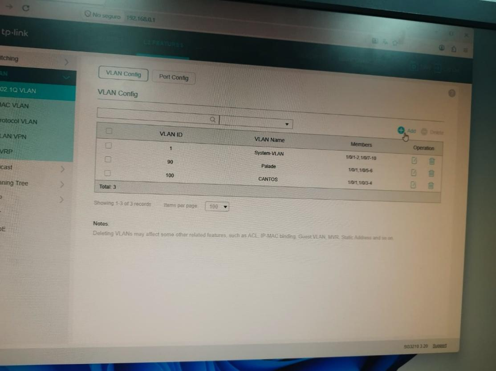
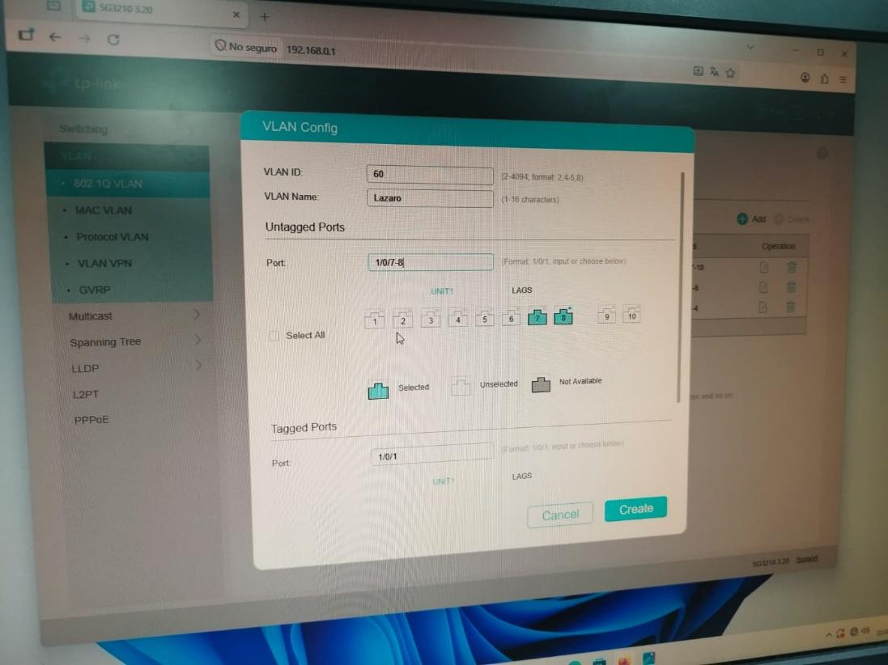
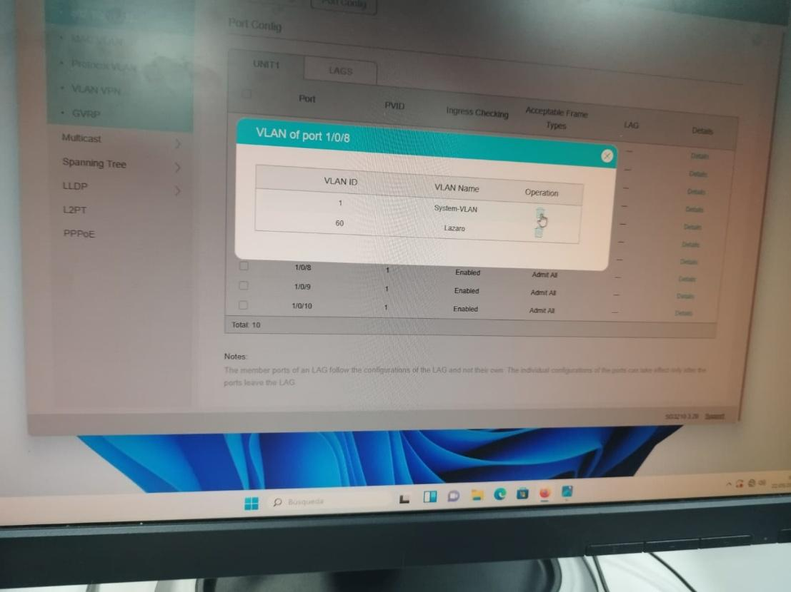
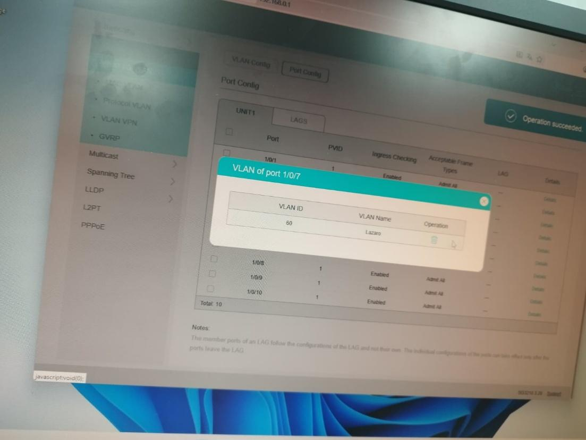

Instala y configura los dispositivos de red de acuerdo con las especificaciones dadas.
Entramos a la configuración del switch desde su IP y accedemos a la configuración de VLAN.

Creamos la VLAN indicando puertos, salida al router, ID de VLAN y nombre.

Ahora verificamos los puertos de VLAN creados.

